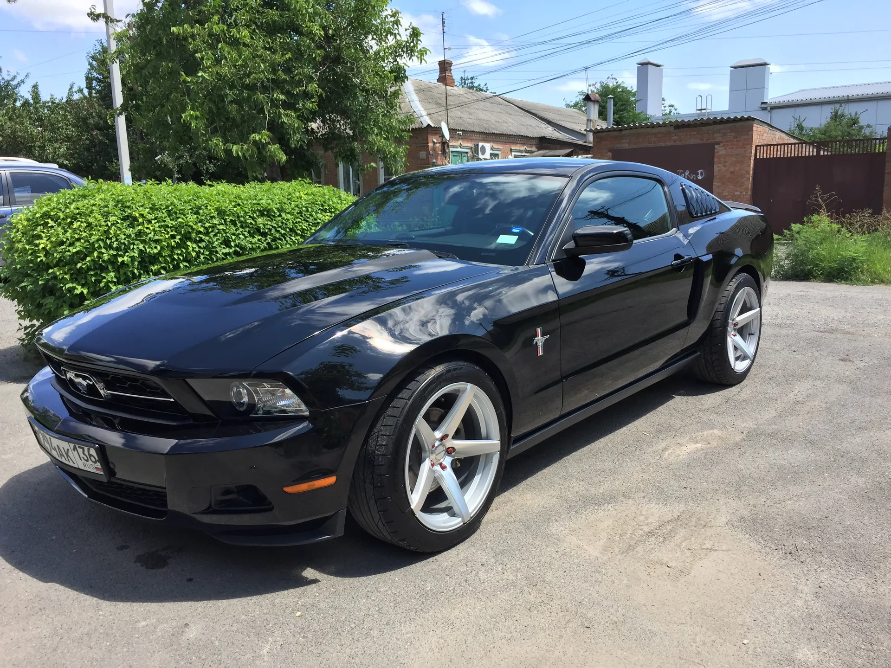
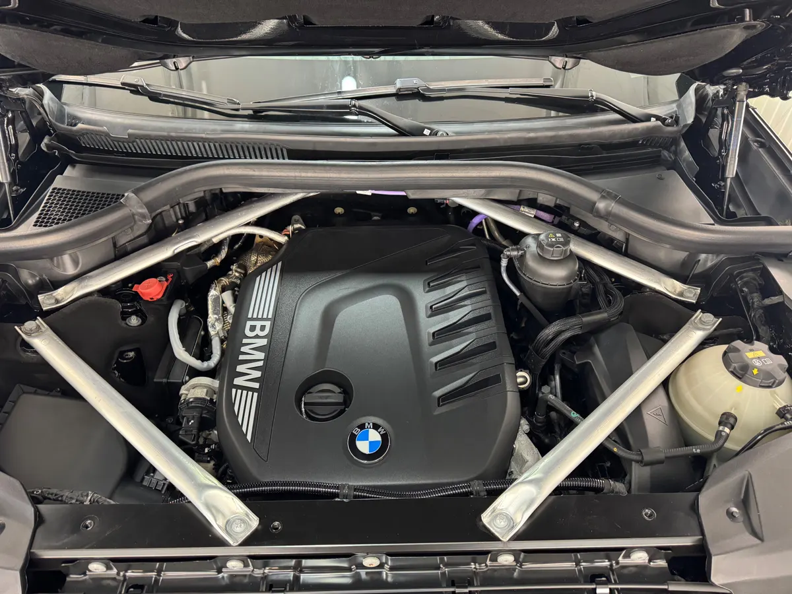
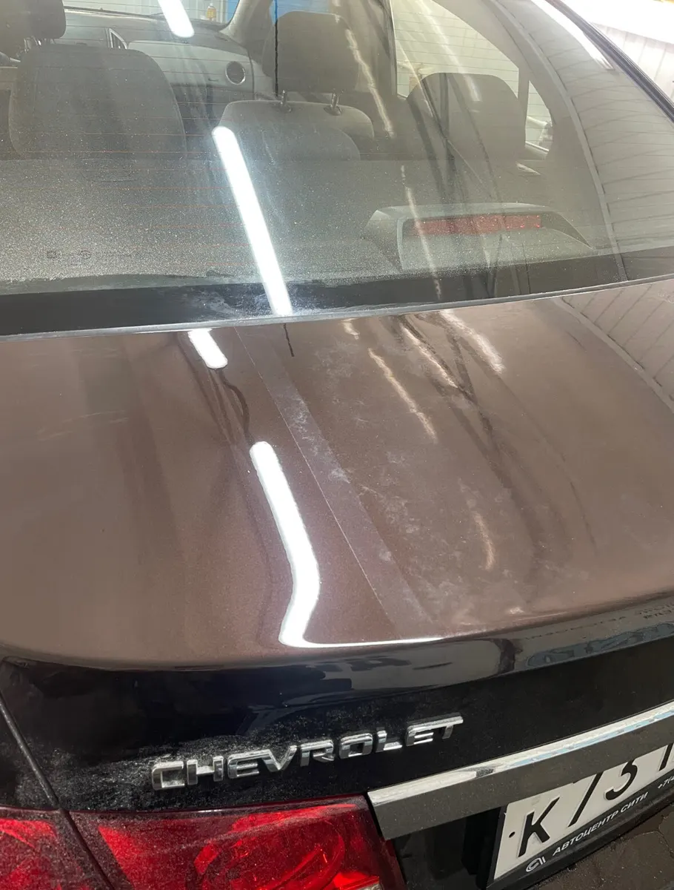
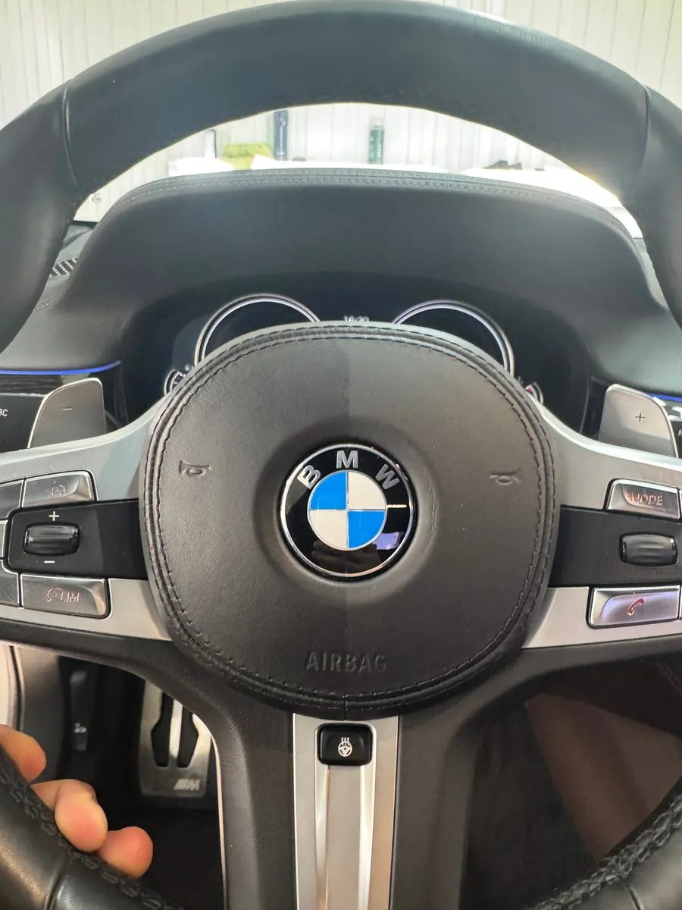

Детейлинг по записи
Полировка и химчистка в Таганроге – без бликов и пятен
Мастер Кирилл убирает царапины, блики на стёклах и следы жизни в салоне. Машина чёрного цвета выезжает без глубоких и абразивных царапин – «как и не было».
- Рейтинг 4,9 – 65 оценок на Яндекс.Картах
- Работает мастер Кирилл
- ул. Чехова, 234 – по предварительной записи

Что вы получаете в Chisto
Входит
- Осмотр и честную оценку до начала работ
- Полировку ЛКП и стёкол без остаточных бликов
- Химчистку салона до чистого результата
- Мойку двигателя с диэлектриком и консервацией
Отдельно, если нужно
- Работу без согласования цены
- Разводы и ворс на стёклах после выдачи
- Запах химии в салоне после химчистки
Цены на типовые работы
Точную сумму называем после осмотра автомобиля – до начала работ.
Детейлинг
- Полировка кузоваубираем царапины и восстанавливаем блескот 17 000 ₽
- Детейлинг моторного отсекамойка двигателя с диэлектриком и консервацией7 000 ₽
Полировка и химчистка – после осмотра. Пишите в сообщениях, пришлите фото – оценим объём и назовём цену до начала работ.
Как проходит работа с нами
- 01
Пишете и присылаете фото
Царапины, блики, грязный салон – покажите, что беспокоит. Оценим объём работ.
- 02
Согласовываем цену и дату
Называем сумму до начала. Записываем удобное время – работаем по записи.
- 03
Делаем детейлинг
Полировка, химчистка, мойка моторного отсека – по регламенту, без спешки.
- 04
Принимаете результат
Осматриваете машину при мастере, на свету. Царапины ушли – подписываемся под результатом.



Чего у нас не бывает
Не оставляем бликов на стёклах
Полировка стёкол доводится до прозрачности – проверяем на свету при вас.
Не прячем цену до выдачи
Сумму согласовываем до начала работ. Дополнительное – только после вашего «да».
Не спешим за счёт качества
Полировка чёрных кузовов и химчистка занимают столько времени, сколько нужно.
Не отдаём машину с запахом химии
После химчистки салон чистый и свежий – без резких отдушек.
Отзывы с Яндекс.Карт
«Обратилась к Кириллу впервые. На лобовом стекле были царапины (блики), салон (после поездок с собачкой) был очень грязный, в пятнах. Результатом очень довольна! Стекло не бликует, салон чистый.»
Ирина Стельмах · 25 июня 2025
«Обратился к Кириллу по полировке своего автомобиля, меня очень впечатлил результат, машина чёрного цвета, много было глубоких и абразивных царапин, всё ушло как и не было.»
Стас · 25 сентября 2024
«Делал бронеплёнку у данного мастера и хочется выразить огромную благодарность за пунктуальность: всё сделал в срок, качество на высшем уровне – сразу видно, что мастер своего дела! Стоимость, оговорённая заранее, не изменилась по окончании работы – что радует!»
Гость Яндекс.Карт
Отзывы с карточки на Яндекс.Картах, без правок.
Частые вопросы
Как записаться?
Напишите в сообщения ВКонтакте или позвоните – договоримся о времени и оценим задачу по фото.
Уберёте глубокие царапины на чёрной машине?
Да. В отзывах владелец чёрного автомобиля пишет, что глубокие и абразивные царапины ушли «как и не было». Точный результат оценим при осмотре.
Сколько длится полировка кузова?
Зависит от состояния ЛКП – обычно от пары часов до дня. Назовём срок при записи.
Моете двигатель?
Да: детейлинг моторного отсека с диэлектриком и консервацией – 7000 ₽.
Запишитесь на полировку или химчистку
- Адрес
- Таганрог, ул. Чехова, 234, Таганрог
- Часы
- По записи
- Телефон
- +7 (961) 427-10-07